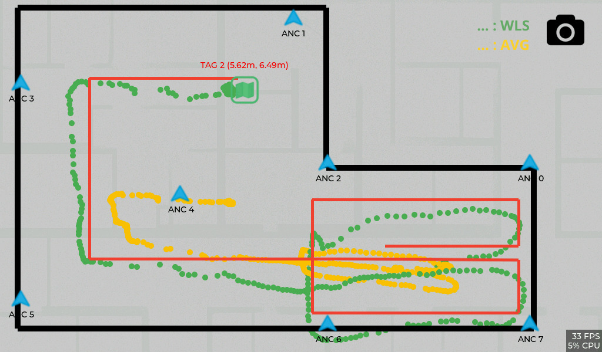

Internships
Laboratoire ICube – Université de Strasbourg
June – August 2025 | Strasbourg, France
Internship in Embedded Systems and UWB Data Processing
🎯 Objective
Develop a real-time indoor localization system based on UWB (Ultra-Wideband) technology using MaUWB and MaTouch modules. The goal was to design an embedded prototype capable of calculating and visualizing dynamic tag positions on a touchscreen interface.
🧩 Tasks & Achievements
- Integration of UWB modules (MaUWB and MaTouch) into an ESP32-S3 embedded environment.
- Implementation of algorithms for accurate localization.
- Development of a graphical interface (LVGL) to display real-time tag positions on a touchscreen.
- Configuration of ESP-NOW for local wireless communication between anchors and tags.
- Testing and performance evaluation of distance measurements and signal stability.
⚙️ Tools & Technologies
💡 Key Learnings
- Mastery of low-level embedded programming and debugging.
- Understanding of UWB communication principles and time-of-flight positioning.
- Experience in real-time systems and data visualization interfaces.
- Improved autonomy, problem-solving, and experimental methodology.
📊 Results
 View report (PDF)The complete source code developed as part of this project is publicly available on GitLab: https://gitlab.com/hassansahili29/uwb_demo.git
SMART WATERS
June – July 2023 | Nice, France
Internship in Data Analysis and GIS for Maritime Activity Monitoring
🎯 Objective
Analyze AIS (Automatic Identification System) maritime data to characterize yacht stopovers around Calvi and identify spatial, temporal, and seasonal patterns in nautical activity. The internship focused on data analysis, visualization, and GIS mapping to support decision-making for local port and municipal stakeholders.
🧩 Tasks & Achievements
- Analysis of a dataset containing 924 yacht stopovers recorded in 2022 using AIS data.
- Characterization of stopovers by duration, location (port vs anchorage zones), and seasonality.
- Use of QGIS to produce thematic maps of anchorage areas and spatial distribution of stopovers.
- Development of Python scripts for data cleaning, filtering, and temporal analysis.
- Identification of key trends in yacht behavior and activity peaks during the summer season.
- Preparation of technical reports and presentation of results to the supervising engineer.
⚙️ Tools & Technologies
💡 Key Learnings
- Practical experience in maritime data analysis using AIS datasets.
- Application of GIS tools for spatial analysis and cartographic visualization.
- Improved skills in Python-based data processing and analytical workflows.
- Understanding of how data analysis supports decision-making in port and coastal management.